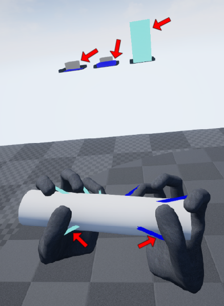
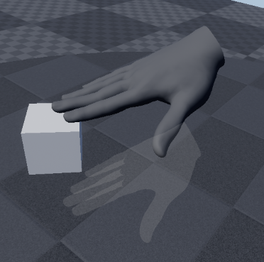

|
HaptX SDK
3.0.3
SDK for HaptX Gloves G1
|
Loading...
Searching...
No Matches
|
HaptX SDK
3.0.3
SDK for HaptX Gloves G1
|
An overview of the main features of the Unreal plugin.
If you're just starting with the Unreal plugin, see the Unreal Integration Guide and/or the Unreal Quick Start Guide. For low-level documentation, see Unreal Plugin.
HaptxCore BlueprintThe HaptxCore blueprint (the blueprint class of AHxCoreActor) is the interface for global parameters of the HaptX system. This class has many parameters that can be configured in the Details panel in the editor. A few noteworthy parameters are summarized below:
| Parameter Name | Description |
|---|---|
| Enable Tactile Feedback | Whether tactile feedback is enabled globally. |
| Enable Force Feedback | Whether force feedback is enabled globally. |
| Tactile Feedback Collision Types | Which collision types trigger tactile feedback. |
| Force Feedback Collision Types | Which collision types trigger force feedback. |
| Grasp Collision Types | Which types of objects receive grasp assistance. |
| Grasp Threshold | Determines how difficult objects are to grasp. |
| Visualize Grasps | Whether the Grasping Visualizer is on by default. |
| Physics Authority Mode | Which physics networking scheme the plugin uses in a multi-user setting. |
| Display On-Screen Messages | Whether important messages are logged to screen. |
| Min Severity | The minimum severity level required for a message to be displayed on screen. |
| Visualize Network State | Whether the Network State Visualizer is on by default. |
AHxCoreActor parameters.
AHxCoreActor adds physical constraints when it detects that a user is grasping an object to aid them with that interaction. When grasps are formed, updated, or released, AHxCoreActor generates events that can be used as triggers (Figure 1).
To aid in the process of debugging the grasping system, AHxCoreActor is equipped with a visualizer that shows information about which objects are being evaluated (Figure 2).
For a legend of all the elements in the visualizer and what they mean see Table 2. The visualizer can be toggled using the input controls described in Unreal Input Quick Reference, assuming the recommended inputs were copied into the project per the Unreal Integration Guide.

| Element | Description |
|---|---|
| Cyan bars (at the top) | Grasp scores for grasps that have formed. |
| Blue bars (at the top) | Grasp scores for grasps that have not formed. |
| Gray bars | Thresholds under which grasps will not form. |
| Cyan lines | Lines from parts of the hand involved in a grasp that has formed, to the object being grasped. |
| Blue lines | Lines from parts of the hand involved in a grasp that has been detected but not formed, to the object not being grasped. |
To aid in the process of debugging multi-user interactions, AHxCoreActor is equipped with a visualizer that shows how grasping constraints are functioning for the server and client (Figure 3).
The visualizer is comprised of shapes drawn around elements in the scene and a text readout describing the current state of constraints in the scene.
For a legend of all the elements in the visualizer and what they mean see Table 3. The visualizer elements are coded based on a combination of colors. For example in (Figure 3) below, the sphere around the hand is white because the hand is instantiated on the server (blue), locally controlled (green), and physically authoritative (red). The visualizer can be toggled using the input controls described in Unreal Input Quick Reference, assuming the recommended inputs were copied into the project per the Unreal Integration Guide.
| Element | Description |
|---|---|
| Blue wire sphere | Hands that are instantiated on the server. |
| Green wire sphere | Hands that are controlled by the local player. |
| Red wire sphere | Hands that currently have physics authority. |
| Red wire cube | Objects that are under authority. |
| Blue wire cube | Objects that is under authority but is being interacted with by multiple clients. |
| Green wire cube | Objects that are currently replicating movement to the client. |
| Yellow wire cube | Objects that have had movement replication to the client paused. |
HaptxPawn BlueprintThe HaptxPawn blueprint is primarily responsible for spawning HaptxHand Blueprints; however, it has secondary responsibilities. It utilizes UHxOffsetTunerComponent to allow the user to configure static world offsets that persist between runs, and in a multi-user context it synchronizes player HMD locations.
HaptxHand BlueprintThe HaptxHand blueprint effectively represents a single HaptX Glove. Under the hood, it is a AHxHandActor that has been combined with a set of patch components.
AHxHandActorAHxHandActor is responsible for motion capture, contact generation, and haptic characterization. It has many parameters that can be configured in the Details panel in the editor. The most noteworthy parameters are summarized below:
| Parameter Name | Description |
|---|---|
| Hand Scale | Scales the hand up or down post UserProfile application. |
| Finger Body Parameters | Characterizes haptic response to contacts for fingers. |
| Palm Body Parameters | Characterizes haptic response to contacts for the palm. |
| Force-feedback Actuator Parameters | Characterizes ForceActuator response on this hand. |
| Visualize Motion Capture | Whether the Motion Capture Visualizer is on by default. |
| Visualize Force Feedback | Whether the Force Feedback Visualizer is on by default. |
| Visualize Displacement | Whether the Displacement Visualizer is on by default. |
| Visualize Contact Damping | Whether the Contact Damping Visualizer is on by default. |
AHxHandActor parameters.
AHxHandActor supports two modes of operation: (1) using HaptX hardware; and (2) simulating HaptX hardware. Operating mode is automatically determined based on the simulation setting in the HaptX Dashboard.
When this class is operating in simulated mode its transform and gesture pose are tracked with VR controllers. By default, the user may cycle through a list of predefined gestures using the input controls described in Unreal Input Quick Reference, assuming the recommended inputs were copied into the project per the Unreal Integration Guide.
AHxHandActor is equipped with a visualizer that shows relevant motion tracking features, including raw sensor data. You can see how this visualizer looks in hardware mode in Figure 4 and simulated mode in Figure 5. This visualizer can be toggled using the input controls described in Unreal Input Quick Reference, assuming the recommended inputs were copied into the project per the Unreal Integration Guide.
AHxHandActor is equipped with a visualizer that shows information about force feedback (Figure 6). For a legend of all the elements in the visualizer and what they mean see Table 5. This visualizer can be toggled using the input controls described in Unreal Input Quick Reference, assuming the recommended inputs were copied into the project per the Unreal Integration Guide.
| Element | Description |
|---|---|
| Cyan indicators | Indicators associated with engaged force-feedback actuators. |
| Black indicators | Indicators associated with disengaged force-feedback actuators. |
| Gray sheaths | Thresholds which must be exceeded by forces (projected onto the black indicators) for force-feedback actuators to engage. |
| Blue bars | Forces being applied to different parts of the hand. |
AHxHandActor is equipped with a visualizer that shows the user when the displacement between their real and virtual hands has become too large (Figure 7). This visualizer can be toggled using the input controls described in Unreal Input Quick Reference, assuming the recommended inputs were copied into the project per the Unreal Integration Guide.

AHxHandActor is equipped with a visualizer that shows the impact of our contact damping system. The box represents an object that is a candidate for contact damping, and the line is colored either blue or red based on whether contact damping is engaged. This visualizer can be toggled using the input controls described in Unreal Input Quick Reference, assuming the recommended inputs were copied into the project per the Unreal Integration Guide.
UHxPatchComponentUHxPatchComponent represents a patch of Tactor s, and is responsible for sampling the game world for surface geometry and characterizing tactile feedback. This class has many parameters that can be configured in the Details panel in the editor. The most noteworthy parameters are summarized below:
| Parameter Name | Description |
|---|---|
| Trace Distance | The length of each ray trace. |
| Trace Offset | How far each trace backs up before tracing. |
| Tactor Parameters | Characterizes Tactor response on this patch. |
| Visualize Traces | Whether the Trace Visualizer is on by default. |
| Visualize Tactile Feedback | Whether the Tactile Feedback Visualizer is on by default. |
UHxPatchComponent parameters.
UHxPatchComponent is equipped with a visualizer that shows information about tactile feedback (Figure 9). For a legend of all the elements in the visualizer and what they mean see Table 7. This visualizer can be toggled using the input controls described in Unreal Input Quick Reference, assuming the recommended inputs were copied into the project per the Unreal Integration Guide.
| Element | Description |
|---|---|
| Cyan indicators | Indicators associated with fully engaged tactors. |
| Blue indicators | Indicators associated with partially engaged tactors. Positional offsets and color gradient indicate inflation heights. |
| Black indicators | Indicators associated with disengaged tactors. |
UHxPatchComponent is equipped with a visualizer that shows how it samples the world for surface geometry (Figure 10). For a legend of all the elements in the visualizer and what they mean see Table 8. This visualizer can be toggled using the input controls described in Unreal Input Quick Reference, assuming the recommended inputs were copied into the project per the Unreal Integration Guide.
| Element | Description |
|---|---|
| Black lines | Traces from the hand searching for objects. |
| Cyan traces | Traces that hit an object. |
| Black spheres | Object trace origins. |
| Cyan spheres | Trace hit locations. |
UHxPhysicalMaterialUHxPhysicalMaterial allows for the associated of haptic properties on a per-object basis. It extends UPhysicalMaterial and can be used in the editor anywhere that UPhysicalMaterial can. To create a UHxPhysicalMaterial, right click an empty space in the content browser and navigate to Physics → HaptX Physical Material (Figure 11).
Examples of the kinds of properties you can edit on a per-object basis include:
*These settings only apply if a UHxPhysicalMaterial is placed on a weld parent or component that is not welded.
UHxPhysicalMaterials will only change HaptX system behavior if placed on a UPrimitiveComponent , not on a UMaterial .
The phrase "Haptic Effects" encapsulates a number of classes that may be extended to define custom haptic-response patterns. The plugin includes several ready-to-use Haptic Effect implementations, which you can see in Table 9. If you need additional functionality you can easily create your own implementation—just duplicate the source of whichever existing class best fits your needs to use as a starting point.
| Class | Description |
|---|---|
UHxWaveObjectEffectComponent | Generates a parameterized, sinusoidal actuation pattern when in contact with attached objects. |
UHxWaveSpatialEffectComponent | Generates a parameterized, sinusoidal actuation pattern in a spherical or cuboidal bounding volume. |
UHxWaveDirectEffectComponent | Generates a parameterized, sinusoidal actuation pattern on Tactor s associated with arbitrary coverage regions. |
UHxCurveObjectEffectComponent | Generates an actuation pattern defined by a UCurveFloat when in contact with attached objects. |
UHxCurveSpatialEffectComponent | Generates an actuation pattern defined by a UCurveFloat in a spherical or cuboidal bounding volume. |
UHxCurveDirectEffectComponent | Generates an actuation pattern defined by a UCurveFloat on Tactor s associated with arbitrary coverage regions. |
UHxObjectEffectComponents will automatically attempt to add themselves to whatever objects they are attached to in the scene hierarchy. You may use UHxObjectEffectComponent::addToObject to manage this manually.When working with default plugin settings, Haptic Effects that output forces of 30,000 – 67,500 cN or displacements of 0.75 – 0.9 cm result in nominal tactor inflation. These values may change if you modify the ContactInterpreter::BodyParameters or ContactInterpreter::TactorParameters found on AHxHandActors and UHxPatchComponents respectively.
ContactInterpreter::TactorParameters::dynamic_scaling value that is not equal to one. This is done to fit a wide range of physical interactions into the smaller range defined by hardware capabilities.AHxCoreActor::tactor_compression_filter_attack_ratio_ and AHxCoreActor::tactor_compression_filter_release_ratio_.The plugin includes example blueprints demonstrating how to use a feature we call Haptic Primitives to create simple interactions like a button, dial, rocker switch, and bolt. Locate these blueprints by checking Show Plugin Content per the Unreal Integration Guide and navigating to haptx Content → HapticPrimitives folder. See Unreal Haptic Primitive Summary for a more in-depth look at the Haptic Primitives feature.